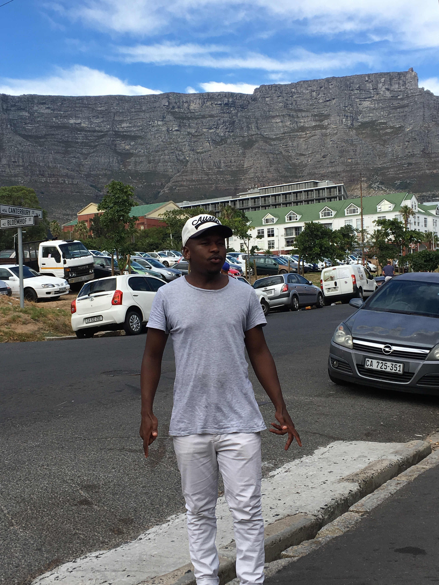
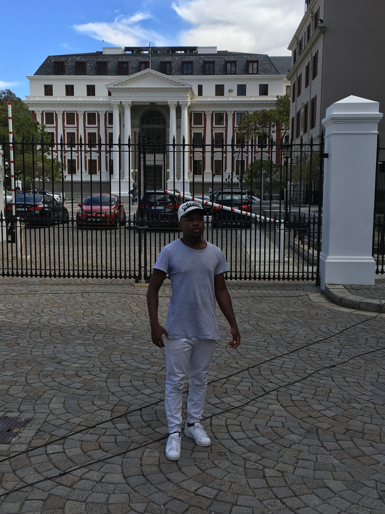

ANELE THEOPHELUS TOM
CITY THAT I WOULD LOVE TO VISIT!
INDIA: The real reason I love India is The Taj Mahal. Is one of the most beautiful places in the world. is the most iconic symbol of India and is, arguably, the most famous monument in the world. Built by the Emperor Shah Jahan as a memorial to his favourite wife, this is widely considered one of the most beautiful architectural wonders ever created. A visit to this marble mausoleum needs to be on every traveller’s list.
FOREIGN LANGUAGE I WOULD LOVE TO SPEAK!
| ENGLISH | FRENCH |
|---|---|
| My name is Anele, how are you? | Je m-appelle Anele, comment allez vuis |
| Coding is awesome! | Le codage est génia! |
HISTORICAL PLACES IN CAPE TOWN!
SA PARLIAMENT:
The predecessor of the Parliament of South Africa, before the 1910 Union of South Africa, was the bicameral Parliament of the Cape of Good Hope. This was composed of the House of Assembly and the Legislative Council.

CITY HALL:
Cape Town City Hall is a large Edwardian building in Cape Town city centre which was built in 1905. It is located on the Grand Parade to the west of the Castle and is built from honey-coloured oolitic limestone imported from Bath in England.

CASTLE:
The Castle of Good Hope is a bastion fort built in the 17th century in Cape Town, South Africa. Originally located on the coastline of Table Bay, following land reclamation the fort is now located inland.